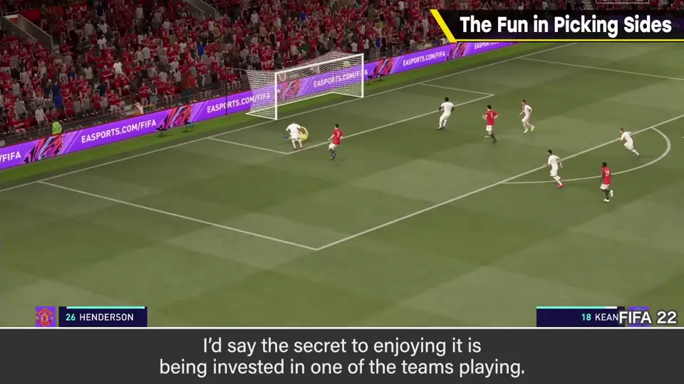
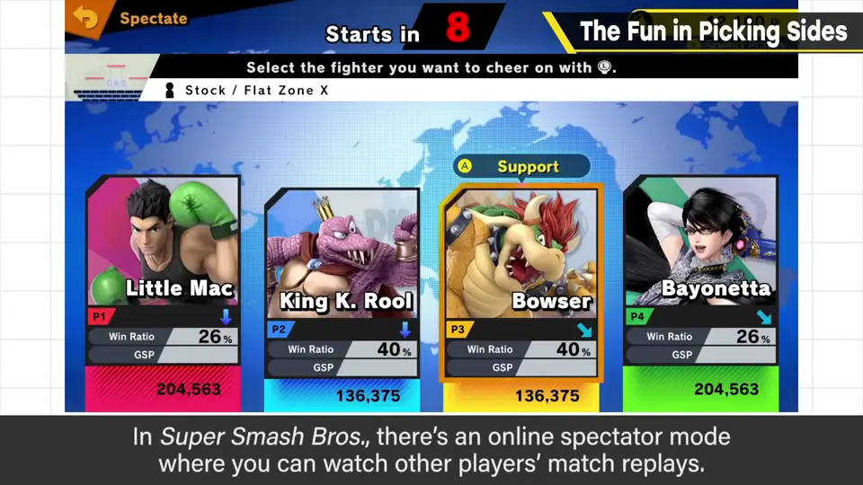
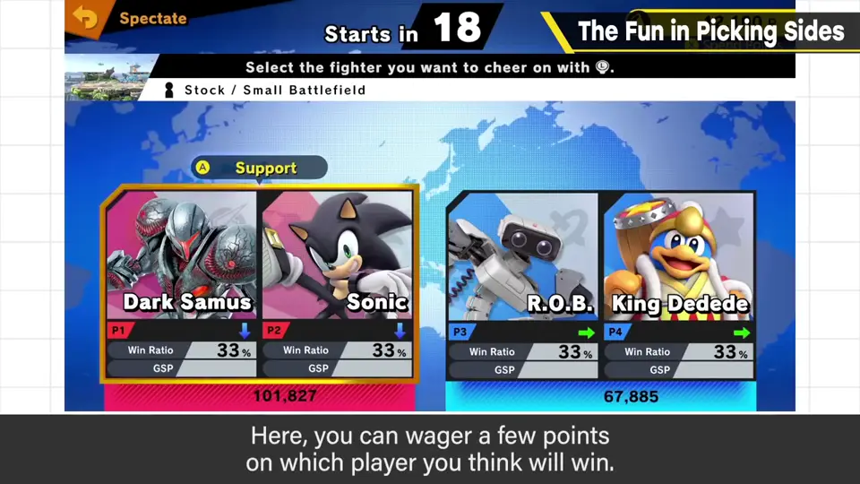
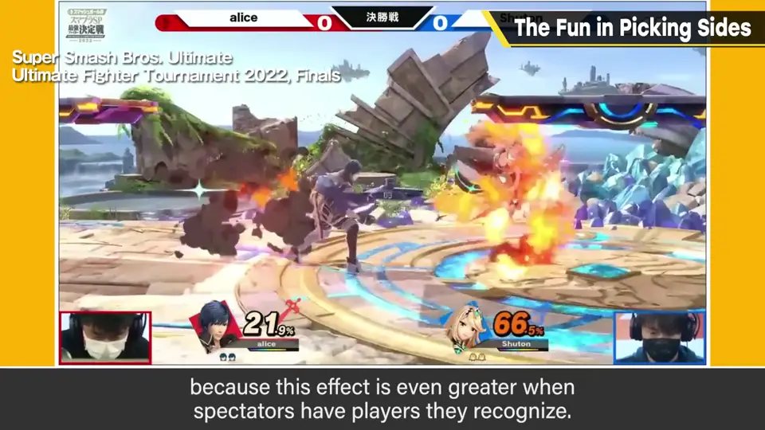
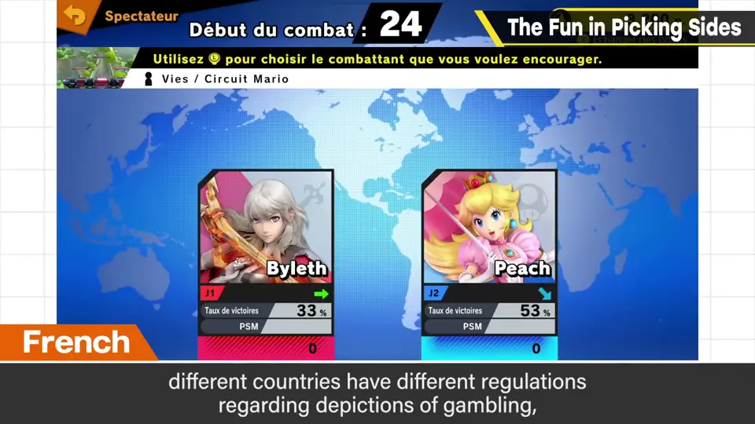

速览
樱井不太看体育比赛，也不怎么兴奋，理由很清楚：他不偏向任何一队。像奥运那样有应支持的祖国时有点不同，但即便如此，对方国家厉害也会坦然尊敬。反过来说，观战的乐趣秘诀就是先偏向某一方；同样是对战、某方获胜，从一开始就清楚该支持谁会更燃。《大乱斗》有在线播放他人比赛回放的观战模式，可以给你认为会赢的人下少量积分——即使有点线索，也根本猜不到谁会赢，又是不认识的人。其实积分本身没多大意义、也赚不了多少，只是作为「偏向某方」的小小动机织进去。认识的人更好——从这个意义说，电竞涌现知名选手是好事（不过总是同样的人持续获胜的未来也伤脑筋）。有观战乐趣的作品，最好营造能偏向某一方的环境。另外，《大乱斗》的支持规格为了不在各国法规中被视为赌博表现，经过多次谨慎调整才做出来，意外地辛苦。说到接近赌博，社交游戏的抽卡思路也许有可借鉴之处：同样是抽卡，让玩家从两三个中选，或权重因某理由不同，应比单纯随机掉落给人更好的印象。
1. 不偏向就不兴奋 0:03
樱井不太看体育比赛，也不怎么兴奋。理由他很清楚：他不偏向任何一队。像奥运那样有应该支持的祖国时有些不同，但即便如此，对方国家厉害的话也会坦然尊敬。

2. 大乱斗的观战押注 0:44
《大乱斗》有在线播放他人比赛回放的观战模式，可以给你认为会赢的人押上少量积分。就算有点线索，也根本猜不到谁赢——毕竟是陌生人。


但其实积分本身没什么意义，也赚不了多少。它只是作为「偏向某方」的一个小小动机织进去的。
3. 认识的人更好 1:17
认识的人更好——从这个意义上说，电竞产生知名选手是好事（当然，总是同样的人以同样方式持续获胜的未来也伤脑筋）。总之想要支持的动机。

4. 法规与抽卡的启示 1:43
题外话：《大乱斗》的支持规格，为了在各国法规中不被认定为赌博式表现，经过反复谨慎调整才终于做成，意外地很辛苦。

说到接近赌博的话题，社交游戏「抽卡」的思路也许有可转用之处：同样是抽卡，让玩家从两三个中选择，或者权重因某种理由而不同，应该比单纯随机掉落给人更好的印象。
自测题
1. 樱井认为观战乐趣的秘诀是什么？
先偏向、支持其中一方。 0:30
2. 《大乱斗》观战模式里押积分的真正目的是什么？
积分本身意义不大，是给「偏向某方」一个小小动机。 1:03
3. 抽卡可以从「选边」得到什么启示？
让玩家从两三个中选，或权重有理由地不同，比纯随机掉落印象更好。 2:00